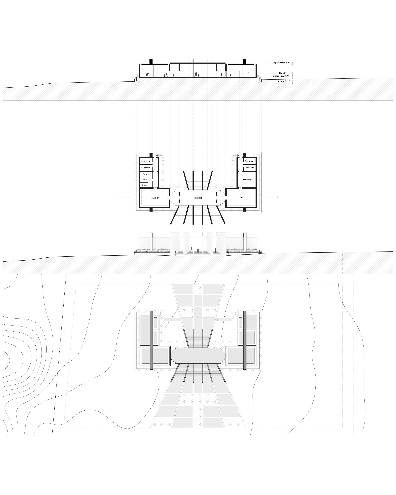

Solar Observatory Visitor Center located in Lubbock Texas. This was Phase 2 of a semester long project where we started with a precedent analysis of Palladio Villas and began to develop 2 different structures in “polar extremes” of Svalbard and Lubbock Texas. This studio focused on the shaping of natural and artificial lighting conditions, with Lubbock experiencing 365 days of sun light while Svalbard experienced 129 days of sunlight and 155 days without sun.
